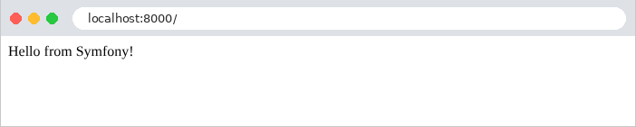
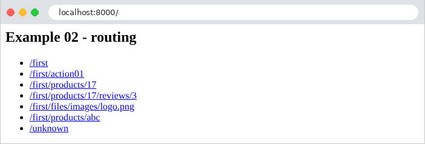
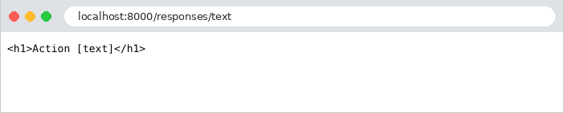
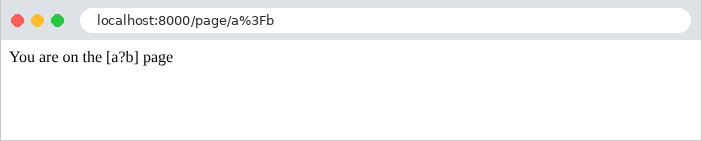

2. Acciones, enrutamiento, respuestas
Este capítulo examina el camino que sigue una solicitud, desde el navegador hasta la acción que la procesa, y la respuesta que esta acción devuelve. Las vistas no se abordarán hasta el capítulo 4: aquí, las acciones devuelven texto o JSON directamente.
2.1. Ejemplo 01: la estructura de una aplicación Symfony
El primer ejemplo es la aplicación [Symfony] más pequeña posible. Un proyecto creado con [composer create-project symfony/skeleton] contiene unas veinte carpetas y archivos, y un proyecto creado con [symfony new --webapp] contiene muchos más (véase la introducción); aquí, conservaremos solo aquellos sin los cuales la aplicación no puede funcionar:
- [public/index.php]: el punto de entrada de la aplicación. Todas las solicitudes HTTP, cualquiera que sea su URL, son procesadas por este archivo. La carpeta [public] es la única que sirve el servidor web: contiene también los archivos estáticos (hojas de estilo, imágenes, scripts), y solo esos;
- [src/Kernel.php]: el núcleo de la aplicación, que la ensambla y procesa las solicitudes. La carpeta [src] contiene todas las clases de la aplicación;
- [config]: la configuración de la aplicación: la lista de sus bundles ([bundles.php]) y la configuración de cada uno (carpeta [packages]);
- [var]: los archivos que la aplicación escribe durante su funcionamiento: el caché (carpeta [var/cache]), donde [Symfony] almacena la configuración compilada, y, más adelante, las sesiones. Esta carpeta la crea [Symfony] en la primera solicitud;
- [.env]: la configuración de la aplicación, en forma de pares [NAME=value];
- [bin/console]: la herramienta de línea de comandos de [Symfony];
- [composer.json]: la descripción del proyecto para [Composer].
2.1.1. Punto de entrada: public/index.php
- Línea 1: un archivo [PHP] comienza con la etiqueta [<?php]. Todo lo que sigue es código [PHP]; un archivo que contiene únicamente código no cierra esta etiqueta;
- línea 2: un comentario, desde [//] hasta el final de la línea ([/* ... */] delimita un comentario de varias líneas);
- líneas 4–7: la instrucción [use] importa el nombre de una clase. El nombre completo de una clase [PHP] incluye su espacio de nombres (namespace), equivalente a los paquetes de [Java]: [Symfony\Component\HttpFoundation\Request] es la clase [Request] en el espacio de nombres [Symfony\Component\HttpFoundation]. Después de [use], el archivo puede escribir simplemente [Request]. Los nombres de las clases de [Symfony] indican de dónde provienen: [Component\HttpFoundation], el componente que representa las solicitudes; HTTP, el componente que representa las respuestas; [Component\Dotenv], el que lee el archivo [.env]; [Component\ErrorHandler], el que maneja los errores. [App\Kernel] es una clase de la propia aplicación;
- línea 11: [require] ejecuta otro archivo, [PHP]. [__DIR__] es el directorio del archivo actual (aquí, [public]); [dirname(__DIR__, 2)] sube dos niveles hasta la carpeta [examples]; el operador [.] concatena dos cadenas. El archivo [vendor/autoload.php], escrito por [Composer], instala el cargador de clases: la primera vez que se usa una clase, encuentra y carga el archivo que la define. Gracias a esto, nunca hay que escribir [require] para las clases. La carpeta [vendor] forma parte de la carpeta [examples], que comparten todos los ejemplos (véase la introducción). Un [require] devuelve el valor del archivo ejecutado: [vendor/autoload.php] devuelve el cargador, almacenado en la variable [$loader]. En [PHP], el nombre de una variable siempre comienza con [$];
- Línea 12: el cargador de clases de [Composer] conoce las clases de las bibliotecas ubicadas en la carpeta [vendor]. También debe conocer las clases de la aplicación, que por convención se almacenan en su carpeta [src], bajo el espacio de nombres [App]. En un proyecto estándar, [Composer] obtiene esta información del archivo [composer.json] del proyecto. Nuestros ejemplos comparten una única carpeta llamada [vendor], pero cada uno tiene su propia carpeta llamada [src]: por lo tanto, cada ejemplo la declara por sí mismo al cargador, mediante su método [addPsr4] (el estándar [PSR-4] asocia espacios de nombres con carpetas: la clase [App\Controller\FirstController] está en el archivo [src/Controller/FirstController.php]). El operador [->] hace referencia a un miembro de un objeto. En una cadena entre comillas simples, [\\] representa un solo carácter [\];
- línea 15: [new Dotenv()] crea un objeto de la clase [Dotenv], cuyo método [bootEnv] lee el archivo [.env] (que se presenta más adelante) y almacena sus variables en los arreglos [$_SERVER] y [$_ENV] de [PHP], donde la aplicación las encontrará;
- líneas 18–20: modo de depuración (el archivo [.env] lo deduce del entorno; véase más adelante). [Debug::enable()] convierte cualquier error de [PHP], incluso una simple advertencia, en una excepción, que se muestra en una página de error detallada (ejemplo 03). [::] hace referencia a un miembro de una clase: [enable] es un método estático, que se invoca sobre la clase sin necesidad de un objeto;
- Línea 23: creación del núcleo de la aplicación, un objeto de la clase [App\Kernel], con dos parámetros: el entorno ([dev]) y el modo de depuración ([true]). [(bool)] convierte el valor en un booleano;
- línea 24: [Request::createFromGlobals()] crea un objeto [Request] a partir de la solicitud HTTP recibida por [PHP] ([PHP] la almacena en sus arreglos “superglobales” [$_GET], [$_POST], [$_COOKIE], [$_SERVER]...);
- línea 25: el núcleo procesa la solicitud ([handle]) y devuelve un objeto [Response]. Aquí es donde ocurre todo: el núcleo arranca (ensambla sus bundles y construye sus servicios), encuentra la acción responsable de la solicitud, la ejecuta y recupera la respuesta que produce;
- línea 26: la respuesta se envía al navegador: el código de estado, los encabezados y luego el cuerpo;
- línea 27: el núcleo completa la solicitud: ejecuta las tareas de procesamiento que pueden esperar hasta que se haya enviado la respuesta (véase el capítulo sobre el ciclo de vida).
Estas cuatro líneas resumen [Symfony]: entra una solicitud, sale una respuesta. Toda la aplicación es una función que transforma un objeto [Request] en un objeto [Response]. Este archivo es el mismo para todos los ejemplos. También pone de relieve una característica propia de [PHP]: la aplicación se reconstruye en cada solicitud. El servidor web ejecuta [public/index.php] de principio a fin por cada solicitud que recibe: carga las clases, construye el núcleo, procesa la solicitud, envía la respuesta y luego lo olvida todo. Ningún objeto sobrevive de una solicitud a la siguiente. En el capítulo sobre los ámbitos de datos veremos las consecuencias de este comportamiento, que es el opuesto al de [Java], [C#] o [Python], cuyas aplicaciones permanecen en memoria entre solicitudes.
Construir el núcleo en cada solicitud resultaría costoso si hubiera que volver a leer e interpretar toda la configuración cada vez. [Symfony] lo hace una sola vez: compila su configuración en código [PHP], almacenado en la carpeta [var/cache/dev] (para el entorno [dev]), que luego reutiliza. En modo de depuración, verifica en cada solicitud si algún archivo de configuración ha cambiado y, de ser necesario, vuelve a compilar.
Un proyecto [Symfony] típico tiene un archivo [public/index.php] más corto, que delega esta tarea al componente [Runtime] de [Symfony] (el caso de estudio lo utiliza): elegimos escribirlo completo para poder ver lo que ocurre.
2.1.2. El núcleo: src/Kernel.php
- línea 4: el espacio de nombres de la clase. Por lo tanto, su nombre completo es [App\Kernel];
- línea 11: la clase [Kernel] de la aplicación hereda ([extends]) de la clase [Kernel] de [Symfony], que se importa con el nombre [BaseKernel] (la palabra clave [as] de la línea 8 renombra la importación, ya que ambas clases tienen el mismo nombre). Esta clase es responsable de procesar una solicitud ([handle]);
- línea 15: la instrucción [use], dentro de una clase, no importa un nombre; en cambio, incorpora un trait, un fragmento de clase reutilizable. [MicroKernelTrait] proporciona al núcleo su comportamiento estándar: lee la lista de bundles en [config/bundles.php], su configuración en la carpeta [config/packages], los servicios en [config/services.yaml] (ejemplo 06) y las rutas en [config/routes.yaml] (ejemplo 02). También busca rutas en la propia clase [Kernel]: esto es lo que permite reducir este primer ejemplo a solo eso;
- líneas 19–24: una acción, un método public que procesa una solicitud. El atributo [#[Route('/')]] la asocia con la ruta [/]: este es el enrutamiento. Un atributo de [PHP], escrito como [#[...]], es información asociada al código (una clase, un método, un parámetro) que [PHP] ignora pero que las bibliotecas leen: el equivalente de las anotaciones de [Java] o de los decoradores de [Python]. [Symfony] hace un uso extensivo de ellos;
- línea 20: [: Response] declara el tipo del valor devuelto. Los tipos son opcionales en [PHP], pero cuando se especifican, [PHP] los verifica en tiempo de ejecución;
- Línea 23: la acción devuelve un objeto [Response], cuyo primer parámetro es el cuerpo de la respuesta. Esto cumple la regla de [Symfony]: una acción siempre devuelve un objeto [Response] (ejemplo 03).
2.1.3. Configuración: config/bundles.php, config/packages/framework.yaml y .env
[Symfony] se compone de bundles: paquetes que integran funcionalidades en la aplicación (vistas [Twig], seguridad, acceso a bases de datos, etc.). La lista de bundles de la aplicación está en el archivo [config/bundles.php]:
El archivo devuelve un arreglo asociativo: para cada bundle, identificado por el nombre de su clase ([FrameworkBundle::class] es el nombre completo de la clase, como cadena), enumera los entornos en los que está activo (en este caso, todos). Nuestra aplicación tiene un solo bundle, FrameworkBundle, que es el núcleo del framework y ensambla los componentes básicos: solicitudes y respuestas, kernel, enrutamiento, contenedor de servicios, consola, etc. Los siguientes ejemplos añadirán más. Cada bundle tiene su propia configuración, ubicada en la carpeta [config/packages], con un archivo por bundle, escrito en [YAML]:
[YAML] es un formato de texto que describe datos mediante sangría: [framework] (la clave de FrameworkBundle) contiene la clave [secret]. Las líneas que comienzan con [#] son comentarios. El valor [%env(APP_SECRET)%] es una referencia a la variable [APP_SECRET], leída del entorno del proceso o, en su defecto, del archivo [.env]:
- Línea 3: el entorno de la aplicación: [dev] para desarrollo, [prod] para producción (y [test] para pruebas automatizadas). El entorno determina la configuración: un archivo [config/packages/prod/xxx.yaml] solo se leería en producción. También establece el modo de depuración, que está habilitado de forma predeterminada salvo en producción (la variable [APP_DEBUG] permitiría definirlo de otro modo): una excepción no controlada muestra entonces una página detallada (ejemplo 03), y [Symfony] vuelve a compilar su configuración en cuanto cambia. Este modo está destinado al desarrollo, y solo al desarrollo: la página de error revela el código fuente y la configuración de la aplicación;
- línea 5: la clave secreta de la aplicación: una cadena aleatoria que [Symfony] utiliza para firmar ciertos datos (enlaces de conexión, tokens anti-CSRF, etc.). Cada ejemplo tiene la suya.
A diferencia de otros frameworks, el archivo [.env] de un proyecto [Symfony] suele publicarse junto con el código fuente: contiene los valores predeterminados de las variables, adecuados para el desarrollo. Los valores específicos de cada instalación (como una contraseña o la clave secreta de producción) se almacenan en un archivo [.env.local] , que se lee después del archivo principal pero nunca se publica; en producción, estos valores se proporcionan en cambio mediante variables de entorno reales, que tienen prioridad sobre ambos archivos. Todo lo que no se especifique en la configuración conserva su valor predeterminado, definido por cada bundle. El comando [php bin/console config:dump-reference framework] muestra todas las claves posibles de FrameworkBundle, junto con sus valores predeterminados (varios cientos de líneas).
2.1.4. La herramienta bin/console y el archivo composer.json
El archivo [bin/console] es un script [PHP] que construye el núcleo, igual que [public/index.php], pero para ejecutar un comando en lugar de procesar una solicitud:
- Línea 1: en [Linux] y [macOS], esta línea permite ejecutar el archivo directamente ([./bin/console]); en [Windows], siempre se escribe [php bin/console];
- Línea 17: la clase [Application] de FrameworkBundle es una aplicación de línea de comandos construida sobre el núcleo; conoce los servicios y la configuración del núcleo. [ArgvInput] representa los parámetros de la línea de comandos; [run] ejecuta el comando solicitado.
[php bin/console list] muestra la lista de comandos disponibles: unos cuarenta en este ejemplo, y más a medida que se incluyen bundles. Usaremos varios de ellos, entre ellos [debug:router], [debug:container] y [cache:clear]. Por último, el archivo [composer.json] describe el ejemplo:
Este es un documento JSON. No se incluye para [Composer] (las bibliotecas de los ejemplos se describen en el archivo [examples/composer.json], véase la introducción), sino para el núcleo: [Symfony] busca la carpeta del proyecto remontándose desde el archivo [src/Kernel.php] hasta la primera carpeta que contiene un archivo llamado [composer.json]. A partir de este archivo encuentra todos los demás ([config], [var], [templates]...). El archivo [composer.json] de un proyecto estándar contiene además la lista de sus bibliotecas y la regla PSR-4 para sus clases (líneas 5–9), que nuestros ejemplos declaran ellos mismos al cargador (línea 12 de [public/index.php]).
2.1.5. Ejecución
En una ventana de terminal abierta en la carpeta [01-structure], escriba [php -S localhost:8000 -t public]. [PHP] muestra:
La opción [-S] inicia el servidor de desarrollo integrado en [PHP]. Escucha en el puerto 8000 de la propia máquina ([localhost]): acepta únicamente solicitudes de esa máquina, lo cual es adecuado para el desarrollo ([-S 0.0.0.0:8000] lo abriría a otras máquinas de la red). La opción [-t public] establece el directorio [public] como raíz del sitio: un archivo que existe en este directorio se sirve tal cual; cualquier otra URL es procesada por [public/index.php]. Se detiene con [Ctrl-C]. Este servidor está destinado al desarrollo: en producción, será un servidor web como [Apache] o [Nginx], asociado con [PHP-FPM] (véase el caso de estudio). No es necesario reiniciarlo después de modificar el código o la configuración: como [PHP] vuelve a leer los archivos en cada solicitud, el cambio surte efecto en la siguiente. ([Symfony] también ofrece su propia herramienta, el programa [symfony], cuyo comando [symfony serve] inicia un servidor más completo; se describe en el apéndice.)
Solicitemos la URL [http://localhost:8000/] con un navegador:

y luego con [curl]. La opción [-i] muestra también los encabezados HTTP de la respuesta:
La primera línea de la respuesta contiene la versión del protocolo, el código de estado (200) y su descripción ([OK]). A continuación vienen los encabezados: el host solicitado, [Connection: close] (el servidor de desarrollo cierra la conexión después de cada respuesta), la versión de [PHP], una directiva de caché (de forma predeterminada, [Symfony] impide que los intermediarios almacenen la respuesta en caché), la fecha, el tipo de contenido y [X-Robots-Tag: noindex], que indica a los motores de búsqueda que no indexen la página ([Symfony] lo agrega en modo de depuración: un sitio en desarrollo no necesita ser indexado). Una línea vacía separa los encabezados del cuerpo de la respuesta. En el resto de este documento, ya no incluiremos los encabezados [Host], [Connection], [X-Powered-By], [Cache-Control], [Date] y [X-Robots-Tag], ya que no varían.
El encabezado [Content-Type: text/html; charset=UTF-8] indica que la respuesta es HTML, cuyos caracteres están codificados en UTF-8. Esta es la elección de [Symfony] para una respuesta cuya acción no especificó el tipo: por lo tanto, el navegador interpreta la cadena como HTML (aquí, al no haber etiquetas, se muestra tal cual). El ejemplo 03 mostrará cómo especificar un tipo diferente. La respuesta no establece ninguna cookie: [Symfony] solo crea una sesión cuando la aplicación la utiliza (véase el capítulo sobre los ámbitos).
En cada solicitud, la consola del servidor muestra unas líneas de registro: la conexión que se establece, un mensaje de [Symfony] que indica la ruta elegida, seguido del código de respuesta, el método y la ruta.
El mensaje [[info] Matched route] proviene del registro (logger) de [Symfony]: sin una biblioteca de registro instalada, [Symfony] escribe sus mensajes en la salida de error del proceso, que el servidor de desarrollo muestra. A la ruta se le asignó un nombre calculado por [Symfony] : [app_kernel_home] , a partir del nombre de la clase y del nombre del método: el siguiente ejemplo nombrará sus rutas automáticamente. Después de esta primera solicitud, la carpeta [var/cache/dev] contiene la configuración compilada: el contenedor de la aplicación ([App_KernelDevDebugContainer.php], ejemplo 06) y la tabla de rutas ([url_matching_routes.php]).
2.2. Ejemplo 02: el enrutamiento
El enrutamiento asocia una URL y un método HTTP (GET, POST...) con una acción. Escribir todas las acciones directamente en el núcleo se volvería rápidamente ilegible; en cambio, se organizan en clases: los controladores. El ejemplo 02 tiene dos:
Los archivos [public/index.php], [bin/console], [composer.json], [.env], [config/bundles.php] y [config/packages/framework.yaml] son los del ejemplo 01: no los enumeraremos de nuevo (solo cambian el nombre del ejemplo y la clave secreta). El núcleo [src/Kernel.php] ya no tiene ninguna funcionalidad: se reduce a su clase y su trait. Cada controlador es una clase del espacio de nombres [App\Controller], ubicada en la carpeta [src/Controller]: esta es la convención de [Symfony], y el estándar [PSR-4] asocia ambos (ejemplo 01).
2.2.1. El controlador HomeController
- línea 4: el espacio de nombres de la clase. Por lo tanto, su nombre completo es [App\Controller\HomeController];
- línea 9: la clase. Por convención, el nombre de una clase se escribe con mayúscula al comienzo de cada palabra ([HomeController]), mientras que el nombre de un método o de una variable comienza con minúscula ([action01Post]). Un controlador de [Symfony] no necesita heredar de ninguna clase (el siguiente ejemplo presentará la clase padre que se suele usar);
- Línea 12: el atributo [#[Route]] de la acción, con tres parámetros, dos de los cuales tienen nombre: el valor se asocia con el parámetro por su nombre ([name: 'home']), no por su posición. La ruta [/], el nombre de la ruta ([home]), que se usará para generar su URL (ejemplo 04), y los métodos HTTP aceptados: [methods: ['GET']]. En [PHP], [[a, b]] es un arreglo (array). Sin el parámetro [methods], la ruta aceptaría todos los métodos;
- línea 13: la acción [index], un método public de la clase;
- líneas 15–26: una cadena de varias líneas. La sintaxis [<<<'HTML'] ... [HTML] (nowdoc) delimita un texto que se escribe tal cual, entre dos líneas que contienen la misma palabra, en este caso [HTML]; la sangría de la línea final se elimina de todas las líneas. La acción devuelve HTML, que se envía con el tipo [text/html] (véase el ejemplo 01).
Por lo tanto, la acción [index] devuelve una página HTML que contiene enlaces a las acciones del otro controlador:

2.2.2. El controlador FirstController
- líneas 10–13: un atributo [#[Route]] aplicado a la clase proporciona un prefijo para las rutas de todas sus acciones: [/first] para sus rutas, [first_] para sus nombres. La URL de una acción es la concatenación del prefijo y la ruta de su ruta;
- líneas 16–20: la ruta [''] hace referencia al propio prefijo: [GET /first];
- líneas 23–34: la misma ruta, para dos métodos HTTP: [GET] y [POST], atendidos por dos acciones diferentes. El nombre de una acción puede elegirse libremente: es el atributo [#[Route]] el que la asocia con una URL y un método HTTP. [methods: ['GET', 'POST']] asociaría ambos métodos con la misma acción;
- Líneas 39–43: [{id}] es un parámetro de ruta: este segmento de la URL puede tomar múltiples valores. El parámetro [$id] de la acción recibe su valor: para la URL [/first/products/17], es 17. De forma predeterminada, un parámetro de ruta acepta cualquier texto sin barra; el parámetro [requirements] lo restringe: la expresión regular [\d+] (uno o más dígitos, donde [\d] denota un dígito y [+] denota repetición) acepta solo dígitos. De lo contrario, la ruta no coincide. El tipo [int] del parámetro de la acción indica a [Symfony] que convierta el valor (una cadena, extraída de la URL) en un entero. Este es el enlace de datos, que el siguiente capítulo examinará en detalle. En la cadena entre comillas dobles ["Product no. $id"], la variable [$id] se reemplaza por su valor: esto es la interpolación (en cambio, una cadena entre comillas simples se escribe tal cual);
- Líneas 47–51: dos parámetros de ruta se pasan a dos parámetros de la acción. [Symfony] los asocia por nombre; el orden de los parámetros de la acción no importa. Esta vez, las restricciones se escriben en la propia ruta, entre [<] y [>]: es más corto;
- líneas 55–60: un parámetro de ruta que contiene [/]. La clase [Requirement] de [Symfony] agrupa, en forma de constantes, las expresiones regulares más comunes: [Requirement::CATCH_ALL] ([.+]: cualquier carácter, incluidas las barras), [Requirement::DIGITS] ([[0-9]+]), [Requirement::UUID], [Requirement::DATE_YMD]...
2.2.3. La configuración: config/routes.yaml y config/services.yaml
Solo falta indicar a [Symfony] dónde están las rutas:
El archivo [config/routes.yaml] describe las rutas de la aplicación o, como en este caso, indica dónde encontrarlas. La clave [controllers] es un nombre arbitrario. El recurso [routing.controllers] hace referencia a las rutas declaradas por los atributos [#[Route]] de los controladores reconocidos por la aplicación. Y es el archivo [config/services.yaml] el que se los da a conocer a la aplicación:
Este archivo declara los servicios de la aplicación: los objetos que [Symfony] sabe crear por sí mismo (ejemplo 06). Las líneas 10–11 convierten cada clase de la carpeta [src] en un servicio. Gracias a la línea 8 ([autoconfigure]), [Symfony] examina cada una: una clase con un método que lleva un atributo [#[Route]] se convierte en un controlador, y sus rutas se agregan a la tabla de enrutamiento. Casi nunca volveremos a escribir estos dos archivos: son los mismos en todos los ejemplos.
2.2.4. Ejecución
Estas son las respuestas a algunas solicitudes:
Para enviar una solicitud POST, use la opción [-X POST] de [curl]:
La solicitud POST se acepta tal cual: [Symfony] no tiene una protección CSRF que se aplique a todas las solicitudes. Protege los formularios uno por uno mediante su componente Form (ejemplo 18). Un método HTTP que ninguna acción atiende para esta ruta produce un error 405 ([Method Not Allowed]). El encabezado [Allow] enumera los métodos aceptados:
En modo de depuración, el cuerpo de la respuesta es la página de error detallada de [Symfony], que veremos en el ejemplo 03, precedida por un comentario HTML que resume el error. Los dos encabezados [X-Debug-Exception] también proporcionan el mensaje y la ubicación del error, codificados como en una URL ([%20] para un espacio...): están destinados a las herramientas de desarrollo. Una ruta [GET] también acepta el método [HEAD] (la misma solicitud que GET, sin el cuerpo de la respuesta), que [Symfony] maneja por sí mismo.
Una URL que ninguna ruta atiende produce un error 404. Lo mismo ocurre con un identificador que no es un número: la restricción [\d+] impide que la ruta coincida con [/first/products/abc].
En un navegador, en modo de depuración:

La página de error de [Symfony] explica que no se encontró ninguna ruta (“No route found”) y muestra la excepción lanzada por el enrutador, [NotFoundHttpException]. El capítulo 7 mostrará cómo reemplazarla por una página personalizada para la aplicación. Observe también que [Symfony] distingue [/first] de [/first/]: la segunda URL no tiene ruta, pero en lugar de devolver un error 404, [Symfony] redirige el navegador (ejemplo 04) a la primera:
El comando [php bin/console debug:router], ejecutado en la carpeta del ejemplo, enumera todas las rutas de la aplicación:
Cada línea muestra el nombre de la ruta, el método HTTP y la ruta. Los nombres de las rutas de [FirstController] efectivamente llevan el prefijo [first_]. [php bin/console debug:router first_product] detallaría una ruta (su restricción, su controlador); [php bin/console router:match /first/products/17] indica qué ruta corresponde a una ruta de acceso.
2.3. Ejemplo 03: las respuestas de una acción
Lo que devuelve una acción determina la respuesta HTTP. El ejemplo 03 repasa los casos principales:
El controlador [ResponsesController] asocia cada URL [/responses/xxx] con una acción:
1 2 3 4 5 6 7 8 9 10 11 12 13 14 15 16 17 18 19 20 21 22 23 24 25 26 27 28 29 30 31 32 33 34 35 36 37 38 39 40 41 42 43 44 45 46 47 48 49 50 51 52 53 54 55 56 57 58 59 60 61 62 63 64 65 66 67 68 69 70 71 72 73 74 75 76 77 78 79 80 81 82 83 84 85 86 87 88 89 90 91 92 93 94 95 96 97 98 99 100 101 102 103 104 105 | |
Analicemos este código:
- Líneas 13–16: el controlador hereda de la clase [AbstractController] de FrameworkBundle. Esta es la clase padre que normalmente se asigna a los controladores: les proporciona atajos, es decir, métodos que realizan las tareas más comunes en una sola línea: [json], [redirect], [redirectToRoute], [render], [createNotFoundException], [addFlash]... Nos los encontraremos a lo largo de los ejemplos;
- línea 15: el atributo de la clase asigna un prefijo de ruta, un prefijo de nombre y el método GET a todas las rutas; ahora cada acción solo necesita especificar su ruta y su nombre;
- Líneas 19–24: [new Response(...)] construye una respuesta HTTP completa: el cuerpo, el código de estado y luego los encabezados, en un arreglo asociativo (un arreglo en el que cada elemento tiene una clave, aquí ['Content-Type'], escrita antes de la flecha [=>]). La clase [Response] define una constante para cada código de estado: [Response::HTTP_OK] es igual a 200. El encabezado [Content-Type] declara aquí texto plano ([text/plain]): el navegador no interpretará las etiquetas;
- líneas 27–31: la misma cadena, sin un tipo declarado: [Symfony] la envía con el tipo [text/html], y el navegador la interpreta;
- Líneas 35–39: el método [json] de [AbstractController] convierte su parámetro a JSON y genera una respuesta de tipo [application/json] (un objeto [JsonResponse], una subclase de [Response]). La conversión la realiza el componente Serializer de [Symfony], que se instala con los ejemplos: un objeto se convierte en un objeto JSON cuyos campos son sus propiedades public (y los resultados devueltos por sus métodos [getXxx], [isXxx] y [hasXxx]). La clase [Person] se describe más adelante. La acción se llama [asJson]: si se llamara [json], redefiniría el [json] método heredado de [AbstractController], y [PHP] fallaría la verificación de la clase, ya que los dos métodos no tienen los mismos parámetros;
- líneas 42–46: un arreglo asociativo [PHP] se convierte en un objeto JSON. El arreglo [PHP] es una estructura multiuso: es a la vez una lista y un diccionario;
- líneas 49–53: un arreglo con claves implícitas (0, 1, 2) es una lista; se convierte en un arreglo JSON;
- líneas 56–62: un arreglo calculado. La función [sort] ordena el arreglo (modifica el propio arreglo); [array_map] aplica una función a cada elemento y devuelve el arreglo de resultados. [fn (int $n) => $n * 10] es una función flecha: una función anónima reducida a una expresión, cuyo valor devuelve;
- líneas 65–69: el segundo parámetro de [json] es el código de estado: 201 ([Created]) reemplaza a 200. Un tercer parámetro, opcional, proporcionaría los encabezados: [['X-Example' => '03']];
- líneas 72–76: el código 204 ([No Content]) significa “nada que mostrar”: la respuesta no tiene cuerpo ([null]);
- líneas 79–83: un error “esperado”: una respuesta 404 ([Not Found]), con un cuerpo (JSON) elegido por la acción. El texto va entre comillas porque contiene un apóstrofo;
- líneas 86–90: el mismo error, provocado por una excepción. [createNotFoundException] lanza una excepción [NotFoundHttpException] (una excepción HTTP, que lleva el código 404); la [throw] instrucción la lanza, lo que interrumpe la acción. [Symfony] la convierte en una respuesta de error. El tipo [never] indica que el método nunca termina normalmente. Esta es la forma más habitual de terminar una acción por un error, incluso en lo profundo de una función llamada por la acción;
- líneas 93–97: un error “inesperado” (una excepción que nadie maneja) produce una respuesta 500 ([Internal Server Error]). [RuntimeException] es una clase de excepción de la biblioteca estándar de [PHP], importada mediante una [use] (línea 7) como cualquier otra clase;
- Líneas 100–104: el error que se debe evitar. Una acción de [Symfony] debe devolver un objeto [Response]; esta devuelve un arreglo, que [Symfony] rechaza (veremos la respuesta más adelante). Esto difiere de otros frameworks, como [Laravel], que convierten por sí mismos un arreglo en JSON: [Symfony] prefiere que la acción especifique explícitamente la respuesta que desea.
La clase [Person]:
- Línea 8: [readonly] hace que todas las propiedades de la clase no se puedan modificar después de inicializarse: un objeto [Person] es inmutable;
- Líneas 10–14: [__construct] es el constructor de la clase, llamado por [new Person('Martin', 'Jean', 42)]. Sus parámetros, precedidos por [public], están promovidos: cada uno declara una propiedad con el mismo nombre, inicializada por el parámetro. Esta sintaxis evita tener que declarar las propiedades y luego asignarlas una por una en el cuerpo del constructor (que aquí está vacío). Las propiedades son públicas: el Serializer puede verlas. No es obligatorio colocar esta clase en una carpeta llamada [Model]; es una decisión tomada en este documento.
Queda el archivo [src/EventListener/ReadableJson.php]:
De forma predeterminada, una respuesta [JsonResponse] contiene un JSON compacto, en una sola línea, en el que los caracteres no ASCII se escriben como secuencias de escape: [é] se convierte en [\u00e9], lo cual es JSON válido pero poco legible. Para los ejemplos de este curso queremos un JSON legible. En lugar de solicitarlo en cada acción, modificamos todas las respuestas JSON de la aplicación mediante el mecanismo central de [Symfony]: los eventos.
Para procesar una solicitud, el núcleo de [Symfony] recorre una serie de etapas y, en cada una, desencadena un evento: [kernel.request] cuando llega la solicitud, [kernel.controller] cuando se ha seleccionado la acción, [kernel.response] cuando se ha generado la respuesta, y así sucesivamente. (El capítulo sobre el ciclo de vida los cubre todos). Un listener (escuchador) es una clase a la que [Symfony] llama para cada evento de un tipo dado; puede ver y modificar los datos que transporta el evento. Así es como [Symfony] mismo está construido: el enrutamiento, la seguridad y la sesión son listeners.
- Línea 13: El atributo [#[AsEventListener]] convierte la clase en un listener del evento [kernel.response] (la constante [KernelEvents::RESPONSE]). No hay nada más que declarar: la clase es un servicio (ejemplo 02) y [Symfony] lee sus atributos ([autoconfigure]);
- línea 16: un listener declarado en una clase se invoca mediante su método [__invoke]. Recibe el evento, un objeto [ResponseEvent], que transporta la solicitud y la respuesta;
- líneas 18–24: si la respuesta es una respuesta JSON (el operador [instanceof] comprueba la clase de un objeto), el listener cambia sus opciones de codificación: los caracteres no ASCII y las barras se escriben tal cual, con formato indentado. El operador [|] combina las tres opciones, que son constantes de [PHP]; [setEncodingOptions] vuelve a codificar los datos de la respuesta.
Los ejemplos 05 a 12 reutilizan este listener. El comando [php bin/console debug:event-dispatcher kernel.response] lista los listeners de eventos: el nuestro está entre los de [Symfony].
En un navegador, la diferencia entre [text/plain] y [text/html] es visible:


Estos son los resultados de las otras acciones:
El objeto se convirtió en un objeto JSON, con un campo por cada propiedad pública. La acción [/responses/array] produce exactamente la misma respuesta.
La respuesta de la excepción es la página de error detallada de [Symfony], la del ejemplo 02, con nuestro mensaje. Cuando el cliente solicita una respuesta JSON mediante el encabezado [Accept: application/json] (opción [-H] de [curl]), [Symfony] adapta su respuesta de error, que se convierte en un documento JSON (mediante el Serializer):
El documento sigue el estándar “problem details” (RFC 7807): un tipo, un título, el código y el detalle (nuestro mensaje). En modo de depuración, también contiene el nombre de la excepción y la pila de llamadas ([trace], la lista de funciones que se estaban ejecutando en el momento del error). Este documento no es una [JsonResponse] generada por una acción; por lo tanto, nuestro listener no le dio formato. El encabezado [Vary: Accept] informa a las cachés de que la respuesta depende del encabezado [Accept] de la solicitud.
Queda la excepción no manejada. En modo de depuración, el navegador muestra la página de error de [Symfony]: el tipo y el mensaje de la excepción, el archivo y la línea donde se lanzó, junto con el código circundante, seguidos de la pila de llamadas, de la más reciente a la más antigua:

La primera función de la pila es nuestra acción, [unexpectedError], en la línea 96 del archivo [ResponsesController.php]. A continuación vienen los métodos del núcleo que la llamaron ([HttpKernel::handleRaw], [HttpKernel::handle], [Kernel::handle]...), hasta llegar a [public/index.php]. La pestaña Logs muestra los mensajes de registro generados durante la solicitud. Por eso el modo de depuración nunca debe habilitarse en un servidor accesible a otras personas. El error también se escribe en el registro de la aplicación; en este caso, la consola del servidor:
Sin modo de depuración ([APP_ENV=prod] en el archivo [.env]), la misma solicitud produce una página de error breve que no revela nada del código:
y el documento JSON ahora contiene solo el código y su etiqueta (["detail":"Not Found"]), sin nuestro mensaje ni la pila de llamadas. El capítulo 7 mostrará cómo presentar una página de error específica de la aplicación. (Después del despliegue en producción, se debe eliminar la carpeta [var/cache/prod] o ejecutar [php bin/console cache:clear]: en producción, [Symfony] ya no comprueba si su configuración ha cambiado).
Por último, la acción que no devuelve un objeto [Response]:
El mensaje es claro: “The controller must return a Response object, but it returned an array.” Veremos en el capítulo sobre el ciclo de vida que esto no es del todo cierto: un listener del evento [kernel.view] podría convertir el arreglo en una respuesta por sí mismo.
2.4. Ejemplo 04: redirecciones
Una redirección es una respuesta que indica al navegador que solicite otra URL: un código de estado 3xx y el encabezado [Location], que contiene la nueva dirección. El navegador envía de inmediato una segunda solicitud a esa dirección. El controlador [RedirectsController]:
- línea 11: un atributo de clase [#[Route]] sin ruta: asigna únicamente el método GET a todas las rutas;
- Líneas 15–19: El método [redirect] de [AbstractController] genera una respuesta de redirección (un objeto [RedirectResponse]) a la dirección especificada. El código 301 ([Moved Permanently]) significa que la página ha cambiado de forma permanente su dirección: el navegador (y los motores de búsqueda) pueden recordar la nueva;
- líneas 29–33: sin un segundo parámetro, [redirect] genera una redirección temporal con el código de estado 302 ([Found]). La URL se construye concatenando segmentos de texto (el operador [.]), lo que plantea un problema, como veremos;
- Líneas 37–41: [redirectToRoute] crea una redirección a una ruta identificada por su nombre (['page']), no por su ruta de acceso. El arreglo asociativo proporciona los parámetros de la ruta (aquí, [name]), correctamente codificados para una URL. Si alguna vez se cambia la ruta de acceso de la ruta [page], las redirecciones hacia ella se actualizarán automáticamente;
- línea 44: el nombre de la ruta, [page], proporcionado por el atributo;
- líneas 51–55: una redirección a otro sitio; la dirección se toma tal cual.
Las respuestas, con [curl] (que, sin ninguna opción, no sigue las redirecciones):
El encabezado [Location] contiene la dirección tal como la proporciona la acción, relativa al sitio: el navegador agrega el protocolo, el host y el puerto de la página actual. La respuesta también incluye un cuerpo breve, en HTML, para un cliente que no siga las redirecciones. La opción [-L] de [curl] sigue la redirección, igual que lo haría un navegador:
Ahora comparemos las dos redirecciones calculadas, con un destino que contiene un signo de interrogación, codificado como [%3F] en la URL (un [?] sin codificar iniciaría los parámetros de la URL):
[Symfony] decodificó el parámetro de la ruta antes de procesarlo: [$destination] es igual a [a?b]. La primera acción lo pega de nuevo en la dirección tal cual: [/page/a?b], que el navegador interpreta como la ruta [/page/a] seguida del parámetro [b]. La segunda acción sigue la ruta con nombre, cuyo parámetro se codifica de nuevo: [/page/a%3Fb]. Al seguir las redirecciones:
Solo la segunda lleva a la página correcta. De ahí la regla: una dirección que contiene un valor variable se construye a partir del nombre de su ruta ([redirectToRoute] y, en las vistas, la función [path]), nunca concatenando cadenas. En el navegador solo se ve la página final; la barra de direcciones muestra la nueva URL:

Existen otros dos códigos de redirección: 303 ([See Other]) y 307 ([Temporary Redirect]), que se obtienen mediante [$this->redirect($url, 303)]. Después de una solicitud POST, los códigos 302 y 303 hacen que el navegador envíe una solicitud GET a la nueva dirección, mientras que 307 (y 308, su versión permanente) hacen que repita la solicitud POST. El ejemplo 20 usará una redirección después de un POST.
2.5. Ejemplo 05: los objetos Request y Response
Hasta ahora, las acciones solo han recibido parámetros de ruta y devuelto una respuesta de una sola línea. Una acción también puede acceder a la solicitud actual y construir su respuesta pieza por pieza. El controlador [HttpController]:
- Línea 20: La acción tiene un parámetro de tipo [Request]. Este parámetro no proviene de la URL: [Symfony] detecta su tipo y le proporciona el objeto [Request] de la solicitud actual, el que creó [public/index.php] (ejemplo 01). La tarea de preparar los parámetros de una acción está a cargo de los resolvedores de valores de argumento : cada uno sabe proporcionar un tipo específico de parámetro (un parámetro de ruta, la solicitud, un servicio, los datos de un formulario, etc.). El orden de los parámetros no importa: una acción puede recibir tanto la solicitud como parámetros de ruta;
- Líneas 22–29: algunos métodos de la solicitud: su método HTTP, su ruta, su URL completa, sus parámetros sin procesar (la parte de la URL que sigue a [?]), el encabezado [User-Agent] (el navegador) y la dirección IP del cliente. Los encabezados se almacenan en la propiedad [headers] de la solicitud, una “bolsa” de encabezados de la cual el método [get] devuelve un encabezado por su nombre. Los parámetros, uno por uno, se tratarán en el próximo capítulo;
- líneas 34–39: la respuesta se crea primero y luego se completa: su propiedad [headers] también es una bolsa de encabezados, donde [set] agrega el encabezado [X-Example] (por convención, los encabezados específicos de una aplicación suelen comenzar con [X-]);
- líneas 43–47: la respuesta construida de una sola vez: el cuerpo, el código de estado y los encabezados;
- líneas 52–62: una respuesta enviada por partes (streaming). Un objeto [StreamedResponse] recibe una función, que a su vez escribe el cuerpo de la respuesta mediante [echo] (la instrucción de [PHP] que escribe en la respuesta); [flush()] envía de inmediato al navegador lo que se ha escrito. La longitud de la respuesta no se conoce de antemano: el servidor envía el código de estado y los encabezados, y luego cada fragmento tan pronto como se genera. Esto es útil para una respuesta muy larga que se genera poco a poco. Pero una vez enviado el primer fragmento, el código de estado ya no puede cambiar: aquí, la función lanza una excepción después del primer fragmento. Es un error que debe evitarse: una respuesta que ya ha comenzado no puede convertirse en una respuesta de error.
El listener [ReadableJson] es el del ejemplo 03. Las respuestas:
Las comillas alrededor de la URL evitan que el terminal interprete el carácter [&]. Observe que los parámetros se han ordenado alfabéticamente: [getQueryString] y [getUri] producen una forma normalizada de la cadena de parámetros, lo que permite comparar dos valores de URL (esto es útil, por ejemplo, para una caché). En un navegador, el encabezado [User-Agent] es el del navegador.
Después de un segundo, [curl] recibe la siguiente respuesta: una página de error. En modo de depuración, [Symfony] intentó manejar la excepción con su página de error, usando el código de estado 500; pero los encabezados ya se habían enviado con el código de estado 200. No tuvo más remedio que agregar su página de error al final del cuerpo que ya se había enviado. El cliente recibe un código de estado 200 y un cuerpo incoherente; sin el modo de depuración, recibiría simplemente un cuerpo truncado, sin ninguna forma de saber que ocurrió un error. Solo el registro de la aplicación lo indica:
Observe el código de respuesta 200 en la segunda línea.
2.6. Ejemplo 06: servicios compartidos e inyección de dependencias
Una acción no debe contener la lógica de la aplicación en sí; la delega a servicios: objetos que saben realizar una tarea específica (leer productos, calcular un carrito de compras, etc.). A menudo varias acciones usan el mismo servicio. [Symfony], al igual que [Spring] o [ASP.NET Core], tiene un contenedor de servicios: un objeto que crea servicios y los proporciona automáticamente a quienes los necesitan. Esto es la inyección de dependencias. El contenedor está en el corazón de [Symfony]: todo en el framework es un servicio (el enrutador, el registro, la sesión, el motor de vistas, etc.), y los propios controladores de la aplicación son servicios (ejemplo 02). El ejemplo 06 organiza su código por dominio (productos, clientes) en lugar de por tipo (controladores, modelos):
No es obligatorio colocar los controladores en [src/Controller]: cualquier clase de la carpeta [src] es un servicio (archivo [config/services.yaml]) y se convierte en controlador si lleva los atributos [#[Route]] (ejemplo 02).
2.6.1. El producto
- línea 7: una clase inmutable (véase el ejemplo 03). Un objeto inmutable puede compartirse con seguridad entre varias partes del código;
- Líneas 9–15: Las propiedades, tal como las anuncia el fabricante, junto con sus tipos. El precio es un entero; el precio en centavos (150 para 1,50 €). Esta es la forma estándar de manejar montos en [PHP]: [PHP] no tiene un tipo decimal; un número de punto flotante, de tipo [float], se representa en binario y no puede representar exactamente 0.1 ni 3.2 (en binario, estos números tienen una cantidad infinita de dígitos): una suma de precios en [float] puede dar 5.500000000000001. En cambio, una suma de enteros siempre es exacta.
2.6.2. El contrato del servicio: ProductsService.php
- Línea 6: el contrato del servicio: lo que puede hacer, sin especificar cómo. En [PHP], como en [Java] o [C#], un contrato se define mediante una interfaz: una lista de métodos sin cuerpo, todos los cuales debe implementar una clase que implemente la interfaz;
- línea 8: un comentario de documentación ([/** ... */]). El tipo [array] no especifica qué contiene el arreglo; la anotación [@return list<Product>], que [PHP] ignora, lo especifica para el editor de código: una lista de productos;
- línea 12: [?Product]: un producto, o [null] si no existe.
2.6.3. La implementación: InMemoryProductsService.php
- línea 6: la clase implementa el contrato y define sus dos métodos;
- línea 9: una propiedad privada: solo el código de la clase puede usarla;
- líneas 11–18: el constructor almacena los productos en la propiedad, referida como [$this->products] ([$this] es el objeto actual);
- líneas 20–24: el método devuelve el arreglo de productos. En [PHP], un arreglo es un valor que se copia al pasarse: quien llama recibe una copia, que puede modificar sin afectar los datos del servicio (en cambio, los objetos [Product] no se copian, pero son inmutables);
- líneas 26–30: La función [array_find] ([PHP] 8.4) devuelve el primer elemento de un arreglo para el cual la función dada devuelve [true], o [null] si no hay ninguno. [===] representa la igualdad estricta: mismo valor y mismo tipo.
2.6.4. El controlador de productos: ProductsController.php
- Líneas 14–18: El controlador necesita el servicio; lo declara como parámetro de su constructor. Cuando [Symfony] crea el controlador (para procesar una solicitud), examina los tipos de los parámetros del constructor y pasa a cada uno el servicio de ese tipo: esto es la inyección por constructor, y se habilita mediante la opción [autowire] del archivo [config/services.yaml] (que se presentará más adelante). El parámetro, con el prefijo [private], se promueve a propiedad privada (véase el ejemplo 03): las acciones lo usan mediante [$this->service]. El controlador solo conoce el contrato del servicio (la interfaz), no su implementación: ignora que los productos están en memoria;
- líneas 20–24: la acción delega el trabajo al servicio. El arreglo de productos devuelto se convierte en un arreglo JSON (ejemplo 03): cada [Product] se convierte en un objeto JSON;
- líneas 26–34: Un producto desconocido devuelve una respuesta 404, con un mensaje en JSON. La restricción de ruta [<\d+>] (ejemplo 02) garantiza que [$id] sea un entero.
2.6.5. El controlador de clientes: ClientsController.php
- Líneas 15–16: Este controlador usa el mismo servicio que los controladores de productos. Esta vez, lo recibe como parámetro de la acción: [Symfony] también inyecta servicios en los parámetros de la acción, como en la solicitud del ejemplo 05. La inyección por constructor es adecuada para los servicios que requieren todas las acciones; la inyección por acción es adecuada para los que requiere una sola acción;
- línea 20: [array_reduce] reduce un arreglo a un solo valor: la función recibe el valor acumulado ([$sum]) y el elemento actual, y devuelve el nuevo valor acumulado; el tercer parámetro es el valor inicial, 0;
- Líneas 21–22: [count] devuelve el número de elementos de un arreglo. El total se devuelve en centavos y se formatea como euros: [number_format] escribe un número con dos decimales, usando un punto como separador decimal y una coma como separador de miles (el ejemplo 16 mostrará una forma mucho mejor de formatear montos). La división [$total / 100] produce un [float], pero solo para fines de presentación: los cálculos reales se realizaron con enteros.
2.6.6. La declaración de los servicios: config/services.yaml
- líneas 4–10: la configuración predeterminada de los servicios de este archivo: [autowire] (enlace automático) hace que el contenedor proporcione los parámetros de sus constructores según su tipo; [autoconfigure] configura cada servicio según sus atributos e interfaces (ejemplo 02);
- líneas 12–15: Cada clase de la carpeta [src] se convierte en un servicio, designado por el nombre completo de su clase: [App\Products\InMemoryProductsService], [App\Products\ProductsController]...;
- líneas 17–19: es aquí, y solo aquí, donde se elige la implementación del servicio. La línea asocia un tipo solicitado (la interfaz) con el servicio que lo proporciona ([@] hace referencia a un servicio por su nombre): esto es un alias. Cuando una clase solicita un [ProductsService], el contenedor le proporciona el servicio [InMemoryProductsService]. Para cambiar a una implementación que lea de una base de datos, bastaría con modificar esta línea: los controladores, que solo conocen el contrato, permanecerían sin cambios. Este es el sentido de la inyección de dependencias: cada parte de la aplicación depende de contratos, y un único lugar decide las implementaciones.
En realidad, esta línea es opcional aquí: cuando solo una clase de la carpeta [src] implementa una interfaz, [Symfony] crea el alias por sí mismo. Sin embargo, en cuanto hay dos implementaciones, ya no sabe cuál elegir y se niega a construir el contenedor: en ese caso, se necesita el alias o el atributo [#[AsAlias]] aplicado a la clase elegida. Lo incluimos aquí para que la elección sea visible. Una clase concreta, en cambio, no requiere ninguna declaración especial: así es como el contenedor crea los controladores.
De forma predeterminada, un servicio es compartido (shared): el contenedor crea un solo objeto [InMemoryProductsService] en la primera solicitud, y quien lo solicite después un [ProductsService] recibirá el mismo. Esto es lo que en otros contextos se conoce como singleton. Además, los servicios son diferidos: un servicio que nadie solicita durante una petición nunca se crea. El comando [php bin/console debug:container] lista los servicios del contenedor (varios cientos, incluidos los de [Symfony]), y [debug:autowiring] lista los tipos que se pueden solicitar mediante inyección:
Por último, una palabra sobre la vida útil de este servicio compartido. Como vimos en el ejemplo 01: en [PHP], la aplicación se vuelve a crear con su contenedor en cada solicitud. Por lo tanto, el servicio es único para una sola solicitud: todas las clases que lo piden mientras se procesa una solicitud reciben el mismo objeto, pero la solicitud siguiente recibirá uno nuevo. Para un servicio que solo lee datos estáticos, como este, esto no hace diferencia. Para un servicio cuyos datos cambian (la lista de tareas del ejemplo 20), esos datos deben almacenarse en otro lugar que no sea el objeto: en un archivo, en una base de datos o en la caché de [Symfony]. Por otro lado, un servicio de [PHP] no puede ser utilizado por dos solicitudes al mismo tiempo: cada solicitud tiene el suyo. Las precauciones necesarias para los servicios compartidos por varias solicitudes simultáneas en [Java], [C#] o [Python] (los bloqueos, en particular) son innecesarias aquí.
2.6.7. Ejecución
El comando [php bin/console debug:router] muestra las tres rutas, declaradas en dos carpetas distintas: